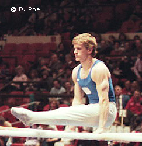

Peter Vidmar (USA)
1984 Olympic AA Silver Medalist and PH Champion

Medal Total
Olympic
Games:
2 Gold, 1 Silver
World Championships: 1 Bronze
World Cup: 1 Bronze
Competition Results
1975
AAU Junior Olympic Jr. Nationals: 3rd AA
1978
US Championships: 13th AA
1979
National High School Championships: 2nd AA
US Championships: 13th AA, 4th PH
US Olympic Festival: 5th AA, 3rd HB, 4th PB
US World Trials: 6th AA
World Championships: 3rd Team, 44th AA (prelims)
1980
NCAA Championships: 2nd AA
Pac-10 Championships: 1st AA
US Championships: 1st AA, 2nd PH, 2nd R, 2nd V, 2nd HB, 4th PB
US Olympic Trials: 3rd AA
USA-FRG Dual Meet: 1st Team, 7th AA
1981
All-American Classic: 11th AA
Champions All: 1st AA
DTB Cup: 4th AA
NCAA Championships: 3rd AA, 1st PB
University Games: 16th AA
USA-CHN Dual Meet: 4th AA
USA-FRG Dual Meet: 1st AA
US World Trials: 2nd AA
Wiesbaden International: 2nd Team, 4th AA
World Championships: 5th Team, 13th AA
1982
Albuquerque Journal Intl: 1st AA
American Cup: 2nd AA
Budapest Invitational: 2nd FX, 2nd PB
Chunichi Cup: 4th AA
DTB Cup: 1st AA
Intl. Mixed Pairs: 14th Team
NCAA Championships: 1st AA
Tokyo Cup: 3rd FX, 3rd PH
USA-CHN Dual Meet: 2nd AA
USA-JPN Dual Meet: 8th AA
USA-USSR Dual Meet: 4th AA
US Championships: 1st AA, 1st R, 1st PB, 2nd HB, 6th PH, 8th FX, 8th V
World Cup: 14th AA, 3rd HB, 6th PH
1983
American Cup: 1st AA
Caesar's Palace Invitational: 4th AA
Chunichi Cup: 5th AA, 2nd PB, 3rd FX
Intl. Mixed Pairs: 2nd Team
NCAA Championships: 1st AA
Pre-Olympics: 1st AA, 1st PB, 2nd PH, 3rd FX, 3rd R, 6th V, 7th HB
Tokyo Cup: 1st R, 2nd PH
UCLA Invitational: 1st AA
USA-USSR Dual Meet: 2nd Team, 1st AA, 2nd PH, 2nd PB, 3rd HB
US Championships: 2nd AA, 2nd PB, 5th R
US World Trials: 1st AA
World Championships: 4th Team, 9th AA, 8th HB
1984
Albuquerque Journal Intl: 4th AA
American Cup: 1st AA
Intl. Mixed Pairs: 3rd Team
Mardi Gras Invitational: 1st AA
Olympics: 1st Team, 2nd AA, 1st PH,
4th R, 4th HB, 7th FX
USA-CHN Dual Meet: 5th AA
US Championships: 2nd AA, 1st FX, 1st PB, 1st HB, 2nd PH, 2nd R, 7th V
US Olympic Trials: 1st AA
This page was created on October 12, 2002
and was last updated on December 29, 2020.
© Gymn Forum